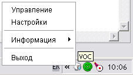
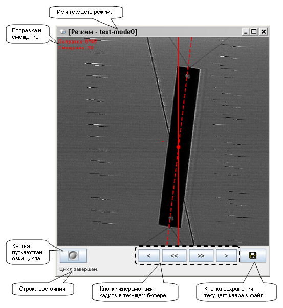
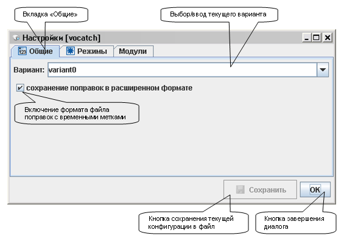
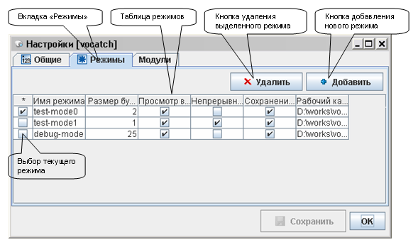
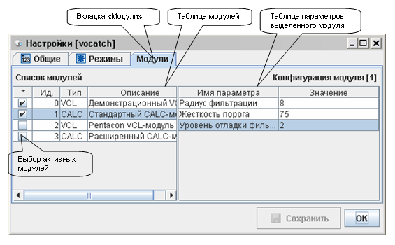
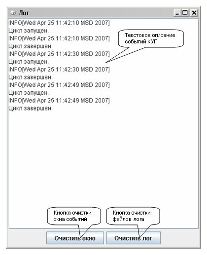

После активации КУП начинает работать в фоновом режиме. Доступ к управляющим окнам производиться через значок в системном трее, который изображён на рисунке 1.

Рис. 1 Значок КУП в системном трее
Контекстное меню включает в себя следующие пункты:
Главное окно предназначено для запуска/остановки цикла работы КУП и отображения видеопотока (см. рисунок 2).

Рис. 2 Окно управления (главное окно)
По завершении цикла работы КУП происходит разблокирование кнопок "перемотки" кадров, у оператора появляется возможность визуально проверить массив поправок на наличие ошибок и неточностей. Информация по причинам возможных ошибок в расчёте поправок находится в разделе "Описание алгоритма решаемой задачи".
Данный диалог позволяет редактировать конфигурацию системы, а именно: изменить вариант, выбрать режим работы КУП и настроить параметры модулей. Редактирование конфигурации можно производить при активном цикле работы (две синхронизированные нити: вычислительная, интерфейсная).
Диалог содержит в себе три вкладки, изображённые на рисунках 3-5. Первая вкладка позволяет вводить имя варианта и включать/отключать расширенный формат файла поправок с временными метками (см. рисунок 3). Информация по расширенному формату находится в разделе "Особенности ПО".

Рис. 3 Диалог настроек, вкладка "Общие"
Вторая вкладка необходима для ведения списка режимов (см. рисунок 4). Режимы отображаются в таблице, редактирование которой производится с помощью кнопок "Добавить", "Удалить". Каждая строка таблицы соответствует описанию одного режима. Описание включает в себя следующие поля:

Рис. 4 Диалог настроек, вкладка "Режимы"
Для выбора активного режима достаточно активировать соответствующий триггер в самой левой колонке таблицы режимов.
Система в непрерывном режиме будет повторять цикл работы пока не поступит команда остановки, в остальных случаях команда остановки не влияет на работу системы.
Последняя вкладка необходима для редактирования параметров модулей (см. рисунок 5). Информацию по модулям можно найти в разделе "Описание алгоритма решаемой задачи". Модули могут быть двух типов: VCL - видеозахват, CALC - анализ. Левая таблица (таблица модулей) отражает информацию по всем найденным модулям. Каждая строка соответсвует одному модулю. Самая левая колонка таблицы модулей позволяет активировать/деактивировать модули. Единовременно может быть активен только один модуль видеозахвата (VCL) и один модуль анализа (CALC). Если выбранный модуль несовместим с текущей конфигурацией, то будет выдано сообщение и активация не произойдёт. Правая таблица (таблица параметров) позволяет редактировать параметры, выбранного в левой таблице модуля. Для редактирования параметров конкретного модуля желательно предварительно обратиться к его описанию.

Рис. 5 Диалог настроек, вкладка "Модули"
Окно событий необходимо для отображения событий и ошибок текущей сессии (см. рисунок 6). Кнопки в нижней части окна позволяют очищать само окно (кнопка "Очистить окно") и файлы лога (кнопка "Очистить лог").

Рис. 6 Окно событий/ошибок
Для запуска цикла КУП необходимо: